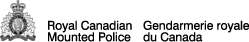
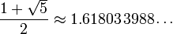

Implementation guide - GC Web Usability Intranet theme
Table of contents
The intranet theme is customizable in order for a Department to subtly brand their intranet. Details are outlined below.
Coding differences: Internet versus intranet
The intranet templates share the same coding foundation as the internet templates. However, there are a few minor coding adjustments that help to create a more intranet-focused product. The intranet templates can:
- Feature the department signature.
- Have some department branding elements applied.
- Have customize links in the header and footer.
Changes to the header
Difference 1 Rework the top bar and FIP elements
- Remove Government of Canada bar
- Rename heading: Government of Canada navigation bar to Intranet navigation bar
- Add an intranet local bar
- Group FIP elements together
- The generic Government of Canada signature should be replaced with the Department's actual signature image.
Difference 2 Optional sub-site bar
A sub-site bar can be added just before the banner ends. Refer to: Adding sub-sites
Changes to the footer
Difference 3 Footer notices have moved
The Terms and conditions | Transparency links have been moved below the department's footer links.
Difference 4 Footer links can be customized
Although you should adheres as closely as possible to the internet footer, there is likely a need for local customization. Refer to: Footer links
Difference 5 GC footer removed and branding image allowed.
The GC footer has been replaced with a departmental branding opportunity. Refer to: Branding image
Page layout types
English examples
- English examples - Content page
- English examples - Content page - Secondary menu 1
- English examples - Content page - Secondary menu 2
- English examples - Content page - Sub-site
- English examples - Content page - Sign In
- English examples - Content page - Sign Out
- English examples - Content page - No search or language selection link
- English examples - Content page - No site menu or breadcrumb trail
- English examples - Content page - No search, language selection link, site menu or breadcrumb trail
- English examples - Splash page - English/French
- English examples - Server message page - English
- English examples - Server message page - English/French
French examples
- French examples - Content page
- French examples - Content page - Secondary menu 1
- French examples - Content page - Secondary menu 2
- French examples - Content page - Sub-site
- French examples - Content page - Sign In
- French examples - Content page - Sign Out
- French examples - Content page - No search or language selection link
- French examples - Content page - No site menu or breadcrumb trail
- French examples - Content page - No search, language selection link, site menu or breadcrumb trail
- French examples - Splash page - French/English
- French examples - Server message page - French
- French examples - Server message page - French/English
Now you can:
Customize the header
Intranet menu bar
A persistant menu bar is located at the top of the page. It contains the Français link as well as any common and global intranet links that are feature worthy.
Design features:
- The specific links should be global and uniform across the entire intranet.
- The only required link is Français. All other links are intranet-specific.
- The links can be internal or external, however all employees must be able to access the content of these links.
- The design treatment should not be altered.
Department signature
Do not use the generic Government of Canada signature, as the template will accomodate your local department signature. The default code accounts for a standard height of 20 pixels. If a different height value is needed, it must be reflected in the CSS file. Manually overwrite the default code with your new height value:
#gcwu-sig, #gcwu-sig-in, #gcwu-sig img{height:20px !important;overflow:visible !important;}
For example:
| Department signature | CSS |
|---|---|
| Leave CSS as the default. | |
Change CSS to: #gcwu-sig, #gcwu-sig-in, #gcwu-sig img{height:33px !important;overflow:visible !important;} |
|
|  | Change CSS to: #gcwu-sig, #gcwu-sig-in, #gcwu-sig img{height:42px !important;overflow:visible !important;} |
Banner image
Banner image source file
Download the banner image source file (58KB, Fireworks PNG).
{kind=link}
The banner is 52 pixels high. The banner stripe is a solid background colour, however the space within the wireframe includes an image that is customizable to meet your intranet branding requirements. The image must seamlessly merge with the chosen background colour.
Outer background
 Background image
Background image
Background colour
Design features:
- Image repeats across the width of the screen.
- Colour appears if images are turned off and ensures colour contrast is still met against white text.
Inner background

Design features:
- INTRANET text appears in a radial glow. This text is bilingual.
- Image color change be changed to reflect the Department's unique branding colour(s). Download the banner image source file (58KB, Fireworks PNG).
- The white text on the background image must pass colour contrast requirements against the branded background colour.
All other requirements are addressed in the following documents:
- Standard on Web Usability Appendix E: Layout and Design
- Guidance on Implementing the Standard on Web Usability: Web Page Layout and Design Elements
Adding sub-sites
Most intranets have sites that operate independently of the the parent site. For example:
- Human Resources Branch is likely a sub-site of the parent intranet site.
- Pacific Region is likely a sub-site of the parent intranet site.
Design features:
- A sub-site bar is added and appears below the standard banner elements.
- The sub-site text links to the the sub-site's homepage.
- The background is controlled by a customizable CSS class. The default appearance is attached to the class
gcwu-subsite-1. The code is:
Also, when adding a sub-site, you must modify the banner code to include the ARIA code. The banner must reference the ID<div class="gcwu-subsite-1" id="gcwu-subsite"> <p><a href="/hr/index-e.html">Human Resources Branch</a></p> </div>gcwu-bnr:<div aria-owns="gcwu-subsite" role="banner" id="gcwu-bnr"> - When additional colour themes are needed, you must create and maintain custom CSS file. The template comes with
gcwu-subsite-1so you must add as many additional classes are your site needs. For examplegcwu-subsite-2could be red,gcwu-subsite-3could be orange,gcwu-subsite-4could be purple etc. The number of extra sub-site classes depends on the architecture of your site.
Site navigation bar
Unlike the internet design, the site navigation bar is optional for intranets.
Design features:
- Height is 32 pixels.
- Colour appearance can be modified to meet the intranet branding needs.
- Link text is standard weight (not bold).
- Down arrows appear when a mega-menu is avaiable.
- Sufficient padding in between the menu items ensures there is no visual congestion.
- Unlike the internet version, there is no border bottom.
All other requirements are addressed in the following documents:
- Standard on Web Usability Appendix E: Layout and Design
- Guidance on Implementing the Standard on Web Usability: Web Page Layout and Design Elements
Tip: Customize the left and right borders
You are expected to change the site navigation bar to match your Department's branding colours. This means that you will have a new background image and will therefore need new border colours. Here's the technique to choose your border colours:
Step 1 Create a 32 pixel high and 1 pixel wide gradient image  . The gradient should be darker on the bottom and lighter on the top. A subtle change in colour is preferred.
. The gradient should be darker on the bottom and lighter on the top. A subtle change in colour is preferred.
Step 2 Determine the colour at the very top of the image . This will be the right border colour.
Step 3 Determine the colour at the very bottom of the image . This will be the left border colour.
Step 4 Update the stylesheet
Breadcrumbs
All requirements are addressed in the following documents:
- Standard on Web Usability Appendix E: Layout and Design
- Guidance on Implementing the Standard on Web Usability: Web Page Layout and Design Elements
Customize the footer
Footer links
The links in the footer should suit the needs of that intranet. However, the footer for intranets should match the TBS approved footer for internets, except where there is a strategic decision to deviate. Refer to these:
- Standard on Web Usability Appendix E: Layout and Design
- Guidance on Implementing the Standard on Web Usability: Web Page Layout and Design Elements
- Guidance on Implementing the Standard on Web Usability: Appendix C: Standardized terms
The number of columns can be easy changed to suit a Department's needs. The maxiumum number allowed is six columns, and uses a grid-12. More than six columns would require text to be inside of a span-1 grid cell, which is not allowed. The WCAG 2.0 requires text to increase up to 200% without breaking the layout and text inside a tiny box cannot effectively do this. Refer to: Success Criterion 1.4.4
Branding image
Below the footer is a 52 pixel high branding image placeholder. The height is equal to the banner and creates a bookend effect for the content.
Up to two images can be inserted.
Image 1

Design features:
- Repeats across the width of the screen.
- Can be any width, as long as the repeat matches up.
- Includes a corresponding background colour that appears if images are turned off.
Image 2
 This example is 211px by 52px
This example is 211px by 52px
Design features:
- A secondary image is optional.
- Defaults to appear right aligned within the wireframe. Placement can be modified as needed.
- Although the height is preset, the width is flexible in order to accomodate each intranet's branding requirments.
Height dimensions
Unlike the width dimensions, the values used for the height have no limitations or restrictions. The height of the banner or the mega menu is often decided by the original designer in a Photoshop environment and then everyone has an opinion:
- "I think the banner takes up too much space!", or the opposite
- "I think it's too thin and we don't have enough space to apply our branding."
Therefore, Phi (Φ) and the golden ratio was chosen as the height benchmark. This mathematical ratio has proven to be aesthetically pleasing while also offering us a rigourous baseline for the height values.
By taking a typical 20 pixel high institutional signature and applying Φ, you get the following sequence:
- 20 / 1.618 = 12px
- 20 x 1.618 = 32px
- 32 x 1.618 = 52px
- 52 x 1.618 = 84px
- 84 x 1.618 = 136px
How many values of Φ and the golden ratio can you find?
Where 20px = Φ, there are several occurrences where the golden ratio is 12px : 20px
Where 32px = Φ, there are several occurrences where the golden ratio is 20px : 32px
Where 52px = Φ, there are several occurrences where the golden ratio is 32px : 52px
Where 84px = Φ, there are several occurrences where the golden ratio is 52px : 84px
Where 136px = Φ, there are several occurrences where the golden ratio is 84px : 136px
Phi (Φ) and the golden ratio?
The pyramids, the Mona Lisa, your teeth and the parthenon have something in common. They all share the same height to width ratio, known as the golden ratio. This ratio is simply 1 to 1.618, which is the same thing as 1 to Phi. The Greek symbol Φ represents Phi, and has a numerical value of 1.6180339887…. Whether it's man-made or existing in nature, Phi is all around you. It is consistently known to exist in beautiful things, including Web pages.
Just as Pi (π= 3.14) is a by-product of a circle, Phi (Φ) is a by-product of a segmented line. This line can morph into a triangle, rectangle, pyramid, swirl, star, pentagon, decagon and more. So how does this apply to the Web? Historically, the size of an image, the padding around a box, or the width of a table was an arbitrary size, chosen to suit a particular need. By applying the golden ratio, which is the relationship between Phi and the number 1, you consistently know exactly what size to make something. This results in consistent visually pleasing layouts that appeal to a broad audience.
Why was Phi chosen as a benchmark?
It's not that Phi is the only way to establish a baseline measurement (we could easily say everything must divide by 10px or have a ratio of 1 : 1.5), but Phi already exists in nature and in man-made objects. Plus it is mathematically flexible (you can have a line, a box, a star and a swirl).
How was Phi discovered?
As a math equation
Phi = 1 + the square root of 5, then divide by 2.
As a square
- Draw a square
- Locate the midpoint in the bottom line
- Connect the midpoint to the top right inside corner
- Pivoting from the midpoint, let the line fall to the right
- The line segment outside the square is phi (φ = 0.618) times longer than the line segment inside the square and the total bottom line is now Phi (Φ = 1.618) times longer than the original sides of the square.
When you use Phi in a ratio, it's known as the golden ratio. You can present the ratio two ways (mathematically, these are the same thing):
- Phi Φ golden ratio = 1 : 1.168
- phi φ golden ratio = 0.618 : 1
As a 13th century math experiment
Statue of Fibonacci Camposanto, Pisa, Italy
In the 13th century, the same Italian mathematician who introduced the base-10 counting system to Europe, asked himself a math question about rabbits. His name was Leonardo of Pisa (known as Fibonacci) and he wondered: How many pairs of rabbits produce within a year, beginning with a single pair, if every month each pair bears a new pair that becomes productive from the second month on?
While this is an idealized (biologically unrealistic) rabbit population, the total number of pairs, month by month, forms the sequence 0, 1, 1, 2, 3, 5, 8, 13, 21, 34, 55, 89, and so on. Each new term is the sum of the previous two terms (1+1=2, 1+2=3, 2+3=5, 3+5=8, and so on). This set of numbers known as the Fibonacci sequence.
How do does this sequence relate to Phi?
1. If you take any number in the Fibonacci sequence and divide it by the preceding number, you get closer and closer to Phi:
- 1 ÷ 0 = not possible
- 1 ÷ 1 = 1
- 2 ÷ 1 = 2
- 3 ÷ 2 = 1.5
- 5 ÷ 3 = 1.667
- 8 ÷ 5 = 1.600
- 13 ÷ 8 = 1.625
- 21 ÷ 13 = 1.615
- 34 ÷ 21 = 1.619
- 55 ÷ 34 = 1.618
- 89 ÷ 55 = 1.618
- 144 ÷ 89 = 1.618
- …and so on
2. If you start with a square that is 1x1, and place another square along its longest wall, you get two 1x1 squares. Placing another square along the combined longest wall yields a 2x2 square. Repeating again gives you a 3x3 square, followed by a 5x5 square. If you continue, you end up with the Fibonacci sequence: 1, 1, 2, 3, 5, 8, 13, 21, 34, 55, 89…. The result of the square creates an overall rectangular shape that has the golden ratio of 1 : 1.618. As well, if you start in the 1x1 square and spiral around, touching where each box connects with its neighbour, you get the golden spiral.
Where does Phi exist?
Basic Phi line
A few of the examples of a basic Phi line are:
- In a perfect smile, the front two middle teeth are 1.618 times wider than their height. When viewed straight on, the ratio of the width of the front tooth to the one beside it is Phi. For related information, refer to the article in the UK's Guardian newspaper: The perfect smile (external link).
- Your forearm is ideally 1.618 times longer than your hand.
- The bottom of your feet to your belly button is ideally 1.618 times the distance from your torso to the top of your head.
- Each section of any of your fingers, from the tip to the base of the wrist, is ideally larger than the preceding one by a ratio of 1 : 1.618.
- You can break Notre Dame down in the many Phi segments.
Golden Rectangle
A few of the examples of a golden rectangle are:
- You can break the Mona Lisa down into several golden rectangles.
- The parthenon's architecture is Phi.
Golden Pentagram / Pentagon
A few of the examples of a golden pentagram / pentagon are:
- the five-pointed star that is in the US flag and European Union flag, and
- the United States Pentagon
Golden Spiral
A few of the examples of a golden spiral are:
- Sunflower seed spirals typically number 21 or 34 running clockwise, and 34 or 55 counterclockwise. These are numbers in the Fibonacci sequence and divide out to Phi.
- Unlike the bones in your hand, the ear isn't formally connected to Phi, but it appears to match the golden swirl.
Golden Pyramid
An example of a golden pyramid is the pyramids of Giza
- Date modified: